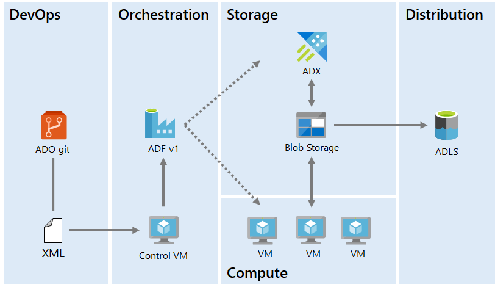
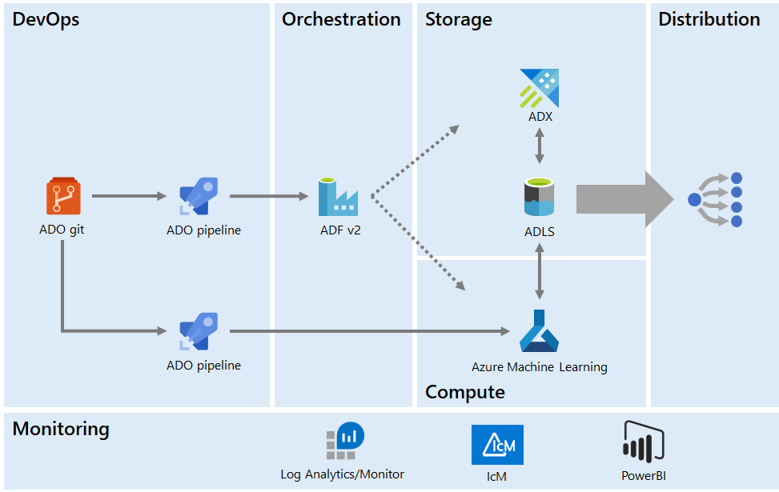
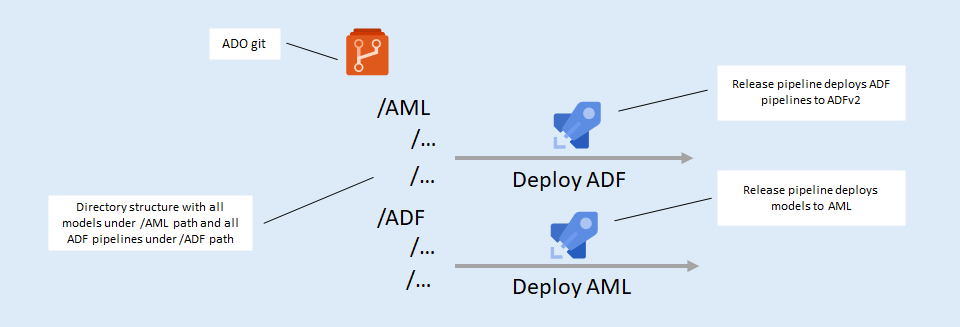

Machine Learning at Scale
This is a cross-post of the article I wrote for Data Science @ Microsoft, Running machine learning at scale.
Our team runs dozens of production machine learning models on a daily, weekly, and monthly basis. We recently went through a redesign of our ML infrastructure to increase its abilities to enable self-serve, scale to match computing needs, reduce impacts among models running on the same VM, and remove differences between dev and production environments. In this post, I will describe the challenges we faced with the previous infrastructure and how we addressed them with our Version 2 architecture.
Version 1
Our machine learning engineers use Python and R to implement models. Our Version 1 infrastructure used a custom XML format from which we generated Azure Data Factory (ADF) v1 pipelines to copy the model input data to blob storage. Then the models ran on a set of VMs our team maintained. The models read their input from and wrote their output back to blob storage. The ADF pipelines then copied the outputs to Azure Data Explorer and to our data distribution Data Lake.

The Control VM consumes XML from Git and generates ADF pipelines to orchestrate data movement and run ML code on a set of VMs.
The V1 infrastructure had several challenges we set out to overcome:
- No self-serve: Much like how we implemented a self-serve environment for analytics, we wanted to do something similar for machine learning, so our ML engineers can create and deploy models without needing help from the data engineering team.
- Auto-scaling: We have some compute-intensive models that run on a certain day of the month when upstream datasets become available. For a few days, we need large compute. Then, until the next month, our compute needs decrease significantly. The V1 infrastructure didn't account for this and we had a constant number of VMs running at all times.
- Isolation: We used to pack multiple models on the same VM, so if one of them consumed, for example, too much RAM, it would impact all the other models running on the same VM. We needed better isolation.
- Differences between dev and prod environments: One issue we kept hitting involved models that ran fine on the ML engineer's VM but failed when moving to production because of environment differences such as missing packages.
The combination of these issues created significant operational costs for the data engineering team: VM management, scaling issues, and having to re-run models that failed because of either resource constraints or bugs caused by missing packages in the production environment. As our machine learning engineers develop more and more models, we decided to invest in making our infrastructure more robust, scalable, and self-serve.
Version 2
Our Version 2 infrastructure aims to address all these issues and provide a scalable, self-serve platform for machine learning. Built fully on Azure, it is made up of the following components, which we'll discuss in turn:
- Orchestration.
- Storage and distribution.
- Compute.
- DevOps.
- Monitoring and alerting.

ADF pipelines deployed from Git orchestrate data movement and running ML code, also deployed from Git, on Azure Machine Learning. Data is distributed through ADLS. The system is monitored using Azure Monitor.
Orchestration
For orchestration, we use Azure Data Factory V2. In contrast to our V1 infrastructure, we don't use XML to generate pipelines, rather we provide a set of templates that ML engineers can use to author the pipelines themselves. We have a dev ADF and a production one.
In general, an end-to-end machine learning pipeline has three steps: Move inputs, kick off compute, and move outputs. Templates make it easy to create and configure a pipeline.
We use CI/CD for ADF: The dev ADF instance is synced with Git, and so an ML engineer can submit a pull request for review. Once approved and merged to master, ADF generates the ARM template we use to deploy the production ADF instance.
The two data factories are similar, except that they are connecting to different environments: Dev to the development storage and compute, and production to the production storage and compute, which is locked down. This addresses one of the limitations of our V1, as we now have similar dev and production environments and so graduating a model from dev to production is much more seamless.
Storage and distribution
For storage, we switched from blob to Azure Data Lake Storage (ADLS) gen2. ADLS gen2 is backed by blob storage, with a couple of important additional features: A hierarchical file system and granular access control. Both are key to our infrastructure.
The hierarchical file system allows us to create a common folder structure for our models, with separate folders for inputs and outputs for each run. The granular access control allows us to enforce who gets to see what data. This is an important aspect of our platform, since some models are trained on sensitive information such as Microsoft revenue that not everyone can view.
Because we are already distributing data through ADLS, we can skip a copy step: Instead of moving the model output to our data distribution Data Lake, we can share it in place, applying proper access control. The less data moves around, the less opportunity for issues in our system and the less network bandwidth our platform needs to use.
Compute
Compute is our biggest upgrade from V1: Instead of maintaining VMs, we switched to using Azure Machine Learning (AML). This is an important switch from IaaS to PaaS, where a lot of the infrastructure we spent time maintaining is now provisioned and handled by AML.
AML addresses two of the main problems we set out to solve: Auto-scaling and isolation for our models. We can run each model on dedicated compute and then AML takes care of spinning up the resources required for a run, winding them down once the run is over.
Because the configuration for compute is done via code, the dev and production environments are identical, meaning we don't run into any issues when graduating a model to production. We can also select the size of compute we want via this configuration, and so a model that is more resource intensive can be configured to run with more RAM and/or more CPU power. AML also gives us statistics on CPU and memory usage, which helps us right-size compute for each model.
DevOps
Both ADF and AML are synced with Git and deployed via two Azure DevOps release pipelines. One of them updates the production ADF instance, the other updates the AML production instance. We split the two because updating model code doesn't require any updates to the orchestration. This means, for example, that for a model bug fix it is enough to deploy to AML without touching the Data Factory.

Having everything in Git enables self-serve, and brings in the required engineering rigor: Changes are done through pull requests, we have a code review process, we don't make manual changes in the production environment, we have a history of all the changes, and we can rebuild an environment from scratch if needed.
Monitoring and alerting
We are running a production system, and so monitoring and alerting are key components. For monitoring, we use Azure Monitor/Log Analytics. ADF orchestrates all our model runs and it integrates natively with Azure Monitor, where we can define alerts for pipeline failures.
For alerting, we use IcM, the Microsoft-wide incident tracking system. Pipeline failures generate incident tickets, which alert engineering of live site issues, like all Azure production services. We are also providing a Power BI dashboard where stakeholders can see the status of all models.
Monitoring and alerting help us maintain our service-level agreements and operational excellence.
Summary
In this article we looked at our Version 2 machine learning infrastructure, going over its key components:
- We use Azure Data Factory to orchestrate all data movement and model runs.
- We use Azure Data Lake Storage to store both model inputs and outputs, which allows us to implement granular access control and easily distribute the data to teams downstream.
- We use Azure Machine Learning for compute, which enables auto-scaling and isolation for model runs.
- We use Azure DevOps to deploy from Git, which enables self-serve and reproducibility.
- We use Azure Monitor for production environment monitoring and alerting.
This cloud-native architecture allows us to reliably run ML at scale with a self-serve environment for our machine learning team, increasing their productivity while decreasing the resources we need to spend.